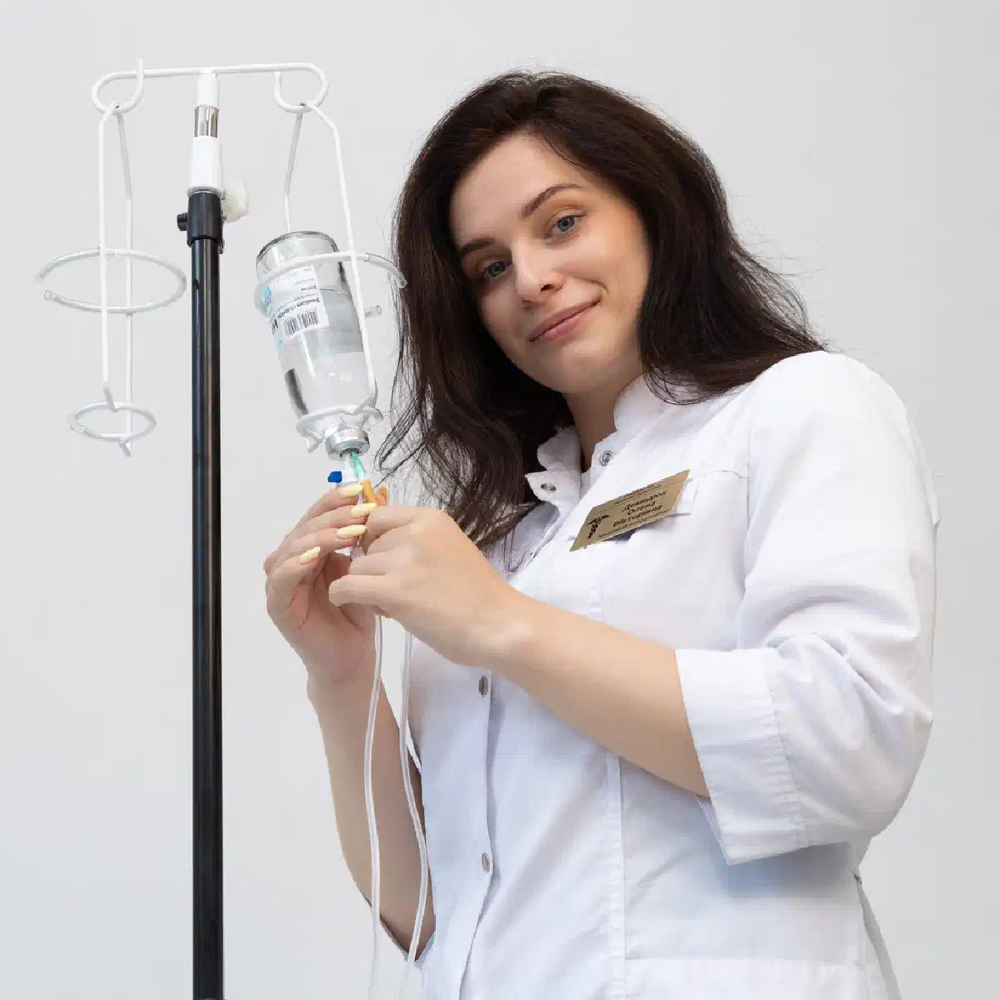

+38(068) 79 72 782
+38(068) 79 72 782Лікування наркотичної залежності від солей у Харкові
Комплексна допомога на шляху до тверезості


Безкоштовна консультація, працюємо цілодобово 24/7
Комплексна допомога на шляху до тверезості

Дата написання: 19 вер. 2026 р.
Останнє оновлення: 27 вер. 2026 р.
Залежність від так званих «солей» може формуватися на тлі вживання синтетичних психостимуляторів, зокрема різних синтетичних катинонів. Такі речовини впливають передусім на центральну нервову та серцево-судинну системи, а наслідки вживання можуть позначатися на сні, емоційному стані, поведінці, харчуванні та загальному фізичному здоров’ї. Лікування наркотичної залежності від солей у Харкові має бути спрямоване не лише на усунення наслідків останнього епізоду вживання. Детоксикація від наркотиків або крапельниця можуть використовуватися на початковому етапі за наявності медичних показань, однак повноцінна робота із залежністю потребує тривалішого підходу.
Звернутися по професійну допомогу варто не лише тоді, коли вживання триває щодня. Проблема може існувати й за періодичних епізодів, якщо людина втрачає контроль над кількістю речовини, повторює вживання попри наслідки або постійно повертається до нього після спроб відмовитися. На формування залежності можуть вказувати виражений потяг, збільшення частоти вживання, тривалі епізоди без сну, нехтування харчуванням і звичайними обов’язками, зміна поведінки та зниження інтересу до діяльності, яка раніше була важливою. Причиною для звернення також є повторні інтоксикації, тривожні або психотичні епізоди, проблеми з роботою та стосунками, фінансові труднощі та неможливість самостійно припинити вживання. У таких ситуаціях бажано звернутися за консультацією нарколога, не чекаючи чергової тяжкої інтоксикації.
Синтетичні катинони мають стимулювальну дію. Повторне вживання може закріплюватися завдяки вираженим змінам настрою, енергії, активності та системи винагороди. З часом людина може дедалі частіше пов’язувати вживання з можливістю відчути підйом, зменшити втому, продовжити спілкування або тимчасово втекти від неприємних емоційних переживань. За регулярного повторення формуються стійкі поведінкові зв’язки. Певні компанії, місця, ситуації, емоційні стани або навіть час доби можуть ставати тригерами потягу. При цьому залежність не можна зводити лише до фізичного стану після речовини. Велику роль відіграють психологічні, соціальні та поведінкові механізми. Тому лікування залежності від психостимуляторів зазвичай потребує роботи одразу в кількох напрямках.
Ознаки можуть розвиватися поступово й тривалий час сприйматися самою людиною як тимчасові наслідки вживання. Насторожити мають ситуації, коли людина дедалі частіше думає про наступне вживання, збільшує тривалість епізодів, втрачає контроль над повторними дозами або не виконує власне рішення припинити вживання. Можуть змінюватися режим сну, харчування та звичний спосіб життя. Людина здатна тривалий час не спати, а потім проводити багато годин або днів у стані вираженої втоми. Можливі дратівливість, тривога, підозрілість, перепади настрою та зниження здатності концентруватися. Також змінюються соціальні зв’язки. Іноді людина починає уникати родичів, приховувати вживання, пропускати роботу або навчання, позичати гроші та дедалі більше часу проводити в оточенні, пов’язаному з наркотиками. Наявність кількох таких ознак є приводом розпочати лікування наркотичної залежності.
Тривале вживання синтетичних стимуляторів може супроводжуватися серйозним навантаженням на організм. З боку серцево-судинної системи можливі тахікардія, підвищення артеріального тиску та інші порушення. Психічні ускладнення можуть включати виражену тривогу, збудження, підозрілість, порушення сприйняття та психотичні симптоми. Тривалі періоди вживання часто супроводжуються порушенням сну та харчування, зневодненням і фізичним виснаженням. Окрему небезпеку становить невідомий склад речовини. Під назвою «солі» можуть поширюватися різні синтетичні сполуки, тому реакцію організму заздалегідь передбачити неможливо. За вираженого погіршення стану може знадобитися лікування наркотичної інтоксикації під медичним наглядом.
Лікування починається з оцінки поточного стану пацієнта. Важливо визначити, чи вживає людина речовину в цей момент, чи є ознаки гострої інтоксикації, коли вона востаннє спала та чи є виражені психічні або серцево-судинні симптоми. Якщо стан стабільний, можна переходити до планування подальшої терапії залежності. За вираженої інтоксикації першочерговим завданням стає медична стабілізація. Після усунення гострого стану лікування спрямовується на припинення вживання та зниження ймовірності повернення до речовини. Програма підбирається індивідуально. Вона може включати спостереження нарколога, психотерапію, корекцію супутніх порушень сну та емоційного стану, роботу з потягом, зміну звичних моделей поведінки та реабілітацію при наркотичній залежності. Лікування залежності не закінчується після кількох днів тверезості. Для стійкого результату важливо продовжити роботу після того, як самопочуття людини помітно покращилося.
Після вживання синтетичних стимуляторів людина може відчувати виражену слабкість, зневоднення, тривогу, тахікардію та інші симптоми. В окремих випадках після медичного огляду лікар може визначити показання для інфузійної терапії. Крапельниця від наркотиків вдома проводиться лише тоді, коли стан людини дає змогу безпечно надавати допомогу поза стаціонаром. Перед процедурою оцінюються свідомість, тиск, пульс, дихання, температура та інші показники. Лікар також уточнює, чи вживалися алкоголь, лікарські препарати або інші психоактивні речовини. Універсальної крапельниці після синтетичних катинонів не існує. Склад допомоги залежить від конкретного стану пацієнта. Якщо присутні судоми, втрата свідомості, виражена дезорієнтація, тяжке збудження, біль у грудях, порушення дихання або швидке погіршення стану, домашнє лікування не є відповідним варіантом.
Вдома можна проводити окремі етапи допомоги, але повністю зводити лікування залежності до домашніх процедур не слід. Домашній формат може використовуватися для консультації, оцінки стану та деяких медичних заходів, якщо пацієнт стабільний. За потреби може бути організована наркологічна допомога вдома. Однак сама залежність потребує зміни поведінки, роботи з потягом і тривалого спостереження. Особливо складно досягти стійкого припинення вживання, якщо людина продовжує перебувати в тому самому середовищі, де легко отримати речовину, регулярно контактує з оточенням, яке вживає наркотики, і не змінює звичний спосіб життя. Тому після початкової стабілізації лікар може рекомендувати амбулаторне лікування, регулярну психотерапію або реабілітаційну програму.
Тривога після вживання стимуляторів може проявлятися внутрішньою напругою, страхом, прискореним серцебиттям, відчуттям загрози та панічними реакціями. Важливо враховувати, що виражена тривога після вживання психоактивних речовин може бути частиною інтоксикації, а не лише самостійною панічною атакою. Не слід намагатися самостійно усувати такий стан поєднанням алкоголю, сильнодіючих заспокійливих або снодійних засобів. Лікар оцінює свідомість, поведінку, тиск, частоту пульсу та супутні симптоми. Якщо людина зберігає контакт з оточенням і її стан стабільний, допомога визначається індивідуально. За вираженої дезорієнтації, агресії, галюцинацій або тяжкого збудження може знадобитися екстрена наркологічна допомога.
Безсоння є поширеною проблемою після вживання стимуляторів. Особливо вираженим воно може ставати після повторного вживання протягом кількох годин або днів. Людина може відчувати сильну втому, але водночас залишатися збудженою та не мати можливості нормально заснути. Спроба самостійно викликати сон алкоголем або комбінацією сильнодіючих седативних препаратів може створювати додаткові ризики. Необхідно припинити подальше вживання речовини, зменшити зовнішні подразники та контролювати стан людини. Якщо безсоння триває тривалий час і супроводжується підозрілістю, порушеннями сприйняття, вираженим збудженням або дезорієнтацією, необхідна медична оцінка.
Сильне психомоторне збудження після синтетичних стимуляторів може супроводжуватися дратівливістю, агресією, підозрілістю та непередбачуваною поведінкою. У такій ситуації родичам не слід провокувати конфлікт, сперечатися з людиною або намагатися силою змусити її приймати ліки. Необхідно за можливості зменшити кількість зовнішніх подразників і звернутися по медичну допомогу. За вираженого збудження одночасно оцінюється фізичний стан пацієнта, оскільки психічні симптоми можуть поєднуватися з тахікардією, підвищенням тиску, гіпертермією та іншими ускладненнями інтоксикації. Якщо людина становить безпосередню небезпеку для себе або оточення, повністю дезорієнтована, у неї виникають судоми або інші тяжкі симптоми, потрібна швидка допомога при наркотичному отруєнні.
Після тривалого епізоду вживання людина може бути фізично виснаженою, зневодненою, кілька діб практично не спати та погано харчуватися. На першому етапі необхідно оцінити загальний стан і виключити небезпечні ускладнення. Після стабілізації увага поступово переноситься на відновлення режиму сну, харчування, фізичного стану та емоційного фону. За наявності показань на початковому етапі може проводитися детоксикація після наркотиків. Однак відновлення сну та апетиту ще не означає усунення залежності. Через деякий час потяг може знову посилюватися, особливо за повернення до звичних тригерів. Тому після тривалого вживання особливо важливо заздалегідь планувати продовження лікування і не обмежуватися лише відновним періодом.
Лікування починається з діагностики. Лікар уточнює, які речовини людина вживає, як часто відбуваються епізоди, наскільки виражений потяг і чи були раніше спроби припинити вживання. Окремо оцінюються психічні симптоми, якість сну, рівень тривоги, наявність депресивних проявів та інші захворювання. За наявності гострої інтоксикації спочатку проводиться медична стабілізація. Після цього формується план лікування залежності. Надалі робота включає зміну моделей поведінки, розпізнавання тригерів вживання, формування навичок контролю потягу, відновлення режиму життя та профілактику зриву. Комплексне лікування залежності від синтетичних наркотиків зазвичай поєднує медичну та психотерапевтичну допомогу.
Психотерапія є важливою частиною лікування залежності від стимуляторів. Вона допомагає зрозуміти, які обставини запускають вживання, чому людині важко припинити його попри наслідки та які способи реагування можна використовувати замість наркотика. Під час терапії розбираються ситуації високого ризику. Це можуть бути певні компанії, конфлікти, нудьга, самотність, тривога, доступ до грошей або повернення до місць, пов’язаних із вживанням. Пацієнт поступово вчиться розпізнавати потяг до того, як він призводить до повторного вживання. Психотерапія при наркотичній залежності також може включати роботу з мотивацією, емоційною регуляцією, міжособистісними стосунками та відновленням звичайних життєвих цілей.
Потяг може виникати навіть після того, як фізичний стан уже нормалізувався. Він часто пов’язаний не лише із самою речовиною, а й зі звичними ситуаціями, людьми, емоційними переживаннями та спогадами про вживання. Тому зниження потягу починається з визначення індивідуальних тригерів. На ранньому етапі лікування може знадобитися обмеження контактів з оточенням, яке вживає наркотики, видалення каналів доступу до речовини та зміна звичного розпорядку дня. Велике значення має нормалізація сну та повернення до регулярної діяльності. Коли людина знову опиняється у стані хронічного недосипання, ізоляції або емоційної кризи, ризик повторного вживання може зростати.
Реабілітація спрямована на тривалішу роботу після завершення гострого медичного етапу. Її завдання полягає не лише у збереженні відмови від речовини, а й у відновленні звичного способу життя. Людина вчиться справлятися з потягом, стресом та емоційними труднощами без повернення до вживання. Паралельно відновлюються режим дня, стосунки з родичами, здатність працювати або навчатися та планувати подальше життя. Реабілітація наркозалежних може бути особливо корисною пацієнтам із тривалою залежністю, регулярними зривами або оточенням, у якому продовжує бути присутнім наркотик. Після основного етапу реабілітації бажано зберегти контакт зі спеціалістами та продовжувати профілактичне спостереження.
Стаціонар може знадобитися як на етапі тяжкої інтоксикації, так і під час лікування залежності. Особливо важливий стаціонарний формат, якщо людина перебуває у тяжкому фізичному стані, тривалий час не спить, відчуває виражене збудження, дезорієнтацію або психотичні симптоми. Наркологічний стаціонар дає змогу спостерігати за станом пацієнта та своєчасно реагувати на його зміни. Стаціонар також дає змогу на певний час повністю прибрати доступ до речовини та відокремити людину від оточення, яке вживає наркотики. Після стабілізації пацієнта лікування має продовжуватися, оскільки перебування у стаціонарі саме по собі не усуває психологічні та поведінкові механізми залежності.
Страх розголосу нерідко заважає людині своєчасно звернутися по наркологічну допомогу. Під час звернення до приватної медичної служби може надаватися анонімне лікування наркоманії відповідно до правил медичної діяльності та чинного законодавства. Для лікаря при цьому важливо отримати достовірну інформацію про речовини, які вживалися. Необхідно повідомляти про тривалість епізоду, поєднання кількох речовин, алкоголь, самостійно прийняті препарати та хронічні захворювання. Конфіденційний формат дає змогу обговорювати проблему залежності та подальше лікування без необхідності приховувати від спеціаліста медично важливі обставини.
Відмова від допомоги часто стає серйозною проблемою для родичів. Погрози, постійні звинувачення та спроби щохвилини контролювати людину зазвичай не формують стійкої мотивації до лікування і можуть посилювати конфлікти. Корисніше обговорювати конкретні наслідки вживання та пропонувати зрозумілий перший крок — наприклад, мотиваційну консультацію нарколога. Розмову краще проводити в період, коли людина не перебуває у стані вираженої інтоксикації або сильного збудження. Родичі також можуть самостійно звернутися по консультацію, щоб зрозуміти, як встановлювати межі та як реагувати на повторне вживання.
Універсального терміну лікування немає. Гостра медична допомога може тривати відносно короткий період, але лікування залежності зазвичай значно довше. На терміни впливають стаж вживання, частота епізодів, психічний і фізичний стан, наявність інших залежностей, соціальна ситуація та кількість попередніх спроб припинити вживання. Після стабілізації може знадобитися кілька етапів: психотерапія, реабілітація від наркотиків, підтримувальне спостереження та профілактика повторного вживання. Тому лікування планується не лише на період усунення гострих симптомів, а й на подальше відновлення.
Вартість лікування наркотичної залежності від солей у Харкові починається від 2499 грн.
Потреба в допомозі може виникнути вночі, вранці або у вихідний день. Особливо важливо своєчасно звернутися до лікаря, якщо людина тривалий час вживає стимулятори, практично не спить або після припинення вживання її стан різко змінився. Цілодобова наркологічна допомога в Харкові дає змогу оцінити стан пацієнта та визначити подальшу тактику незалежно від часу звернення. За стабільних показників окремі заходи можуть проводитися вдома. Якщо присутні тяжке збудження, виражена сплутаність свідомості, судоми, сильний біль у грудях, втрата свідомості, серйозні порушення дихання або інші небезпечні симптоми, потрібна екстрена допомога та можлива госпіталізація.
Під час звернення бажано якомога точніше описати стан людини. Лікарю корисно знати вік пацієнта, коли востаннє вживалася речовина, скільки часу тривав епізод, коли людина востаннє нормально спала та які симптоми присутні зараз. Необхідно повідомити про виражену тривогу, збудження, сплутаність свідомості, тахікардію, підвищений тиск, судоми або проблеми з диханням. Також важливо зазначити, чи вживалися алкоголь, інші наркотичні речовини або лікарські препарати. За відносно стабільного стану може бути організований виклик нарколога додому в Харкові. Після огляду спеціаліст визначає, чи допустима допомога вдома, чи стан потребує лікування у стаціонарі.
Залежність впливає не лише на саму людину, а й на її сім’ю. Родичі нерідко тривалий час живуть у стані тривоги, намагаються контролювати вживання, закривають борги або постійно усувають наслідки поведінки залежної людини. Консультація для родичів залежного може допомогти сім’ї виробити більш послідовну позицію. Важливо встановити зрозумілі межі та не підтримувати вживання грошима або діями, які дають людині змогу уникати всіх наслідків залежності. Водночас лікування рідко будується лише на тиску. Кориснішою метою стає створення умов, за яких звернення по професійну допомогу залишається доступним і зрозумілим варіантом.
Детоксикація вирішує передусім завдання гострого періоду. Вона може бути необхідною за певних наслідків вживання, але не усуває сформовані моделі поведінки та психологічний потяг. Після покращення фізичного стану людина нерідко відчуває, що проблема вже вирішена. Однак повернення до звичного оточення, стресу або тригерів може швидко відновити бажання вжити речовину. Тому після зняття наркотичної інтоксикації лікування залежності має продовжуватися. Основну роль на наступному етапі відіграють робота з мотивацією, психотерапевтичні та поведінкові методи, профілактика повторного вживання та відновлення соціального життя.
Комплексний підхід об’єднує кілька етапів допомоги. При гострій інтоксикації першочерговим завданням стає медична стабілізація. Після покращення стану проводиться детальніша оцінка залежності, психічного здоров’я та факторів, які підтримують вживання. Наступний етап спрямований на припинення вживання та роботу з потягом. Використовуються психотерапевтичні та поведінкові методи, змінюється звичний режим життя, зменшується контакт із тригерами. За потреби пацієнт проходить комплексне лікування наркоманії з подальшою реабілітацією. Після основного курсу важливо зберегти підтримувальне спостереження, оскільки ризик повторного вживання не зникає одразу після досягнення тверезості. Лікування наркотичної залежності від солей у Харкові не повинно обмежуватися крапельницею або кількома днями відновлення після чергового епізоду. Чим частіше вживання повторюється, тим важливіше перейти від усунення окремих наслідків до системної роботи із самою залежністю.
Телефон для консультації та виклику нарколога додому в Харкові: +38(050-021-69-57)

Статтю перевірено експертом
Робулець Ольга
Лікар-нарколог, ординатор
Можливо цікава стаття:
Як формується наркотична залежність

Так, ми суворо дотримуємося повної конфіденційності на всіх етапах лікування. Інформація про пацієнта, діагноз та проходження терапії не передається третім особам. Звернення до нас не тягне за собою постановку на облік. Ви можете бути впевнені у безпеці та анонімності.
Програма лікування розробляється індивідуально після консультації з фахівцем. Враховуються вид залежності, її тривалість, фізичний та психологічний стан пацієнта. Такий підхід дозволяє підвищити ефективність терапії та знизити ризик зриву. Ми не використовуємо шаблонні рішення.
Так, ми супроводжуємо пацієнтів і після основного курсу лікування. Проводяться консультації, рекомендації щодо адаптації та профілактики рецидивів. За потреби можлива подальша психологічна підтримка. Це допомагає зберегти результат та повернутися до повноцінного життя.
Анонимно

Помогли при ломке
Анонимно
Хочу поблагодарить специалистов фирмы «Амбрела плюс» за реальную помощь в сложный период. Обратился в состоянии ломки, было тяжело и физически, и морально. Врачи отреагировали быстро, всё объяснили, поддерживали на каждом этапе. Состояние стабилизировали, стало значительно легче уже в первые часы. Спасибо за профессионализм и человеческое отношение.
Номер телефону:
+380 (68) 797 27 82
+380 (50) 021 69 57
Адресу наркологічного центра вашого міста уточнюйте за
телефоном
Працюємо: Київ, Одеса, Львів, Харків, Дніпро, Запоріжжя,
Черкасах, Чугуєві, Чорноморську, Кам'янському
Telegram: t.me/umbrellaplus
Графік работы: Цілодобово